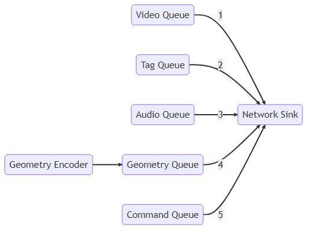

Server¶
Introduction¶
TeleportServer is a library that provides server functionality in conjunction with a real-time game or simulation engine.
Networking¶
Classes¶
-
class AudioEncodePipeline¶
A wrapper for an avs::AudioEncoder and an avs::Pipeline.
-
class AudioEncoder : public avs::AudioEncoderBackendInterface¶
Implementation of the default audio encoding.
-
struct ClientNetworkContext¶
Wrapper for the network pipeline objects for a given client. //
-
class ClientData¶
Data object for a connected client.
Public Functions
-
void reparentNode(avs::uid nodeID)¶
Called after reparenting to inform the client of the new parent.
-
void reparentNode(avs::uid nodeID)¶
-
class ClientManager¶
Container for the client-specific data objects.
-
class ClientMessaging : public avs::GenericTargetInterface¶
Per-client messaging handler.
Warning
doxygenclass: Cannot find class “teleport::server::DiscoveryService” in doxygen xml output for project “TeleportVR” from directory: G:/Jarvis/workspace/Teleport/Teleport/build_docs/docs/doxygen/xml
-
class GeometryEncoder : public avs::GeometryEncoderBackendInterface¶
Backend implementation of the geometry encoder.
-
class GeometryStore¶
Singleton for storing geometry data and managing the geometry file cache. The definitive geometry store is the file structure pointed to by SetCachePath(). The structure in GeometryStore is the session structure, using uid’s for quick reference.
Public Functions
-
bool CheckForErrors() const¶
Check for errors - these should be resolved before using this store in a server.
-
avs::uid GetOrGenerateUid(const std::string &path)¶
Get or generate a uid. If the path already corresponds to an id, that will be returned. Otherwise a new one will be added.
-
avs::uid PathToUid(std::string p) const¶
Get the current session uid corresponding to the given resource/asset path.
-
std::string UidToPath(avs::uid u) const¶
Get the resource/asset path corresponding to the current session uid.
-
bool CheckForErrors() const¶
-
class GeometryStreamingService : public avs::GeometryRequesterBackendInterface¶
This per-client class tracks the resources and nodes that the client needs, and returns them via GeometryRequesterBackendInterface to the encoder.
Subclassed by teleport::server::PluginGeometryStreamingService
Public Functions
-
virtual avs::RenderingFeatures getClientRenderingFeatures() const override¶
Returns the rendering features the client supports.
-
virtual avs::RenderingFeatures getClientRenderingFeatures() const override¶
-
class HTTPService¶
Interface for http services.
Subclassed by teleport::server::DefaultHTTPService
-
class DefaultHTTPService : public teleport::server::HTTPService¶
Default service for HTTP download of resources from the Teleport server.
-
class NetworkPipeline¶
Network pipeline.
Warning
doxygenclass: Cannot find class “teleport::server::ServerSettings” in doxygen xml output for project “TeleportVR” from directory: G:/Jarvis/workspace/Teleport/Teleport/build_docs/docs/doxygen/xml
-
class SourceNetworkPipeline¶
-
class VideoEncodePipeline¶
Wrapper for the video encoding pipeline objects.